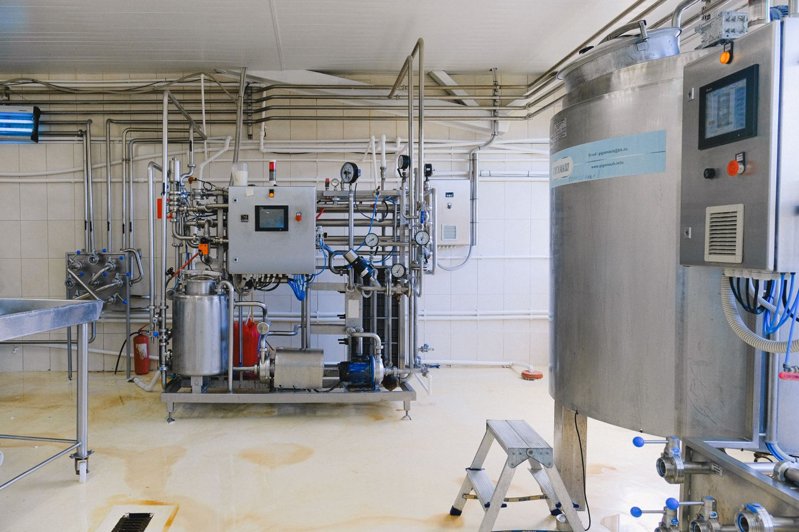
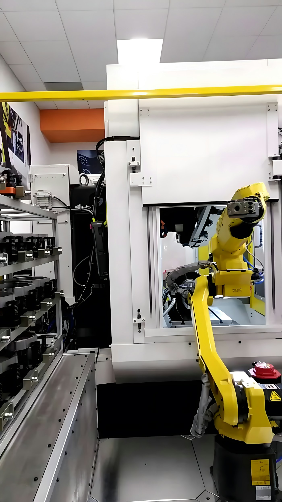
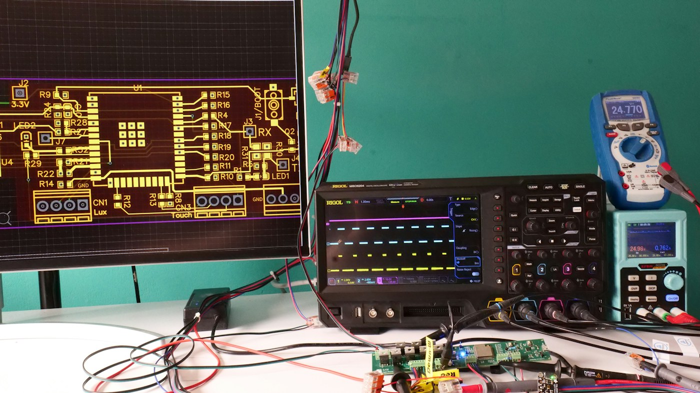

ECE · CURRICULUM GUIDE



FIVE-YEAR PROGRAMECE ✳ COURSE MAP
THE COURSE MAP
Start with your year.
YEAR
No course matches that search. Try another title or code.
ECE · CURRICULUM GUIDE



THE COURSE MAP
ASTU · EXIT EXAM PREPARATION
A focused review plan based on ASTU’s ECE competency framework.
STUDY BLUEPRINT
The framework groups the core courses by subject area. Each area’s question count follows its share of the selected core-course credits.
ACCESS SUPPORT
Candidates who need accommodations can request accessible formats such as Braille, large print, or audio, along with reader, scribe, screen-reader, magnification, or room support as appropriate. The framework recommends contacting the examination office at least two weeks ahead.